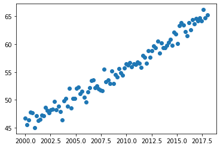

Corrélation¶
On simule une jeu de données à l’aide du code suivant :
import numpy as np
import matplotlib.pyplot as plt
np.random.seed(0) # pour que le générateur "aléatoire" soit
# le même pour tout le monde
N = 100
x = np.linspace(2000, 2018, N)
y = np.arange(N)*0.2 + 45 + np.random.normal(size=N)
plt.plot(x, y, 'o');

Tracez et ajustez les données par une une droite \(y=ax+b\).
Quel est l’incertitude sur \(b\)? Qu’en pensez-vous ?
Calculez la valeur et l’incertitude de votre fit en \(x= 2010\).
Réalisez \(M\) simulations (\(M\) = 1000 par exemples); tracez sur un graph les coefficients a et b; Calculez la matrice de covariance.
Trouvez une fonction de fit plus pertinente pour ce problème.
Solution¶
# Question 1
from scipy.optimize import curve_fit
def fit_function(x, a, b):
return a*x + b
p_opt, cov_mat = curve_fit(fit_function, x, y)
a, b = p_opt
print(p_opt)
plt.plot(x,fit_function(x,*p_opt))
plt.plot(x,y,"o")
[ 1.08348182e+00 -2.12175517e+03]
[<matplotlib.lines.Line2D at 0x7f02977d76d0>]
# Question 2
sigma = np.sqrt(np.diag(cov_mat))
sigma_a = sigma[0]
sigma_b = sigma[1]
print(f'Incertitude sur b : {sigma_b:.1f}')
# L'incertitude sur b est beaucoup plus importante que l'incertitude
# sur chaque point
Incertitude sur b : 38.8
# Question 3
x_test = 2010
print('Valeur en 2010 ', a*x_test + b)
sigma_y = np.sqrt(x_test**2 * sigma_a**2 + sigma_b**2)
print('Incertitude sans correlations', sigma_y)
Valeur en 2010 56.04328983428377
Incertitude sans correlations 54.92410215981484
Les variables \(a\) et \(b\) ne sont pas indépendante. La variance de \(ax + b\) est donnée par \(x^2\mathrm{Var}(a) + \mathrm{Var}(b) + 2x\mathrm{Covar}(a, b)\)
sigma_y = np.sqrt(x_test**2 * sigma_a**2 + sigma_b**2 + 2*x_test*cov_mat[1, 0])
print(f'Incertitude avec correlations {sigma_y:.3f}')
Incertitude avec correlations 0.103
Il est donc important de tenir compte des correlations obtenu par le fit pour calculer exactement l’incertitude sur une valeur du fit.
# Question 4
def one_simulation():
N = 100
x = np.linspace(2000, 2018, N)
y = np.arange(N)*0.2 + 45 + np.random.normal(size=N)
p_opt, cor_mat = curve_fit(fit_function, x, y)
return p_opt
M = 1000
many_results = np.array([one_simulation() for _ in range(M)])
Ta, Tb = many_results.T
fig = plt.figure()
ax = fig.subplots(1, 1)
ax.scatter(Ta, Tb, s=1)
ax.set_xlabel('a')
ax.set_ylabel('b')
Text(0, 0.5, 'b')
cov_numerique = np.cov(many_results.T)
print(cov_numerique)
[[ 3.47366872e-04 -6.97875508e-01]
[-6.97875508e-01 1.40207350e+03]]
cov_mat
array([[ 3.73523915e-04, -7.50409536e-01],
[-7.50409536e-01, 1.50758303e+03]])
# Fonction de fit plus pretinente
# Le parametre $b$ correspond au fit en l'an 2000
def fit_function(x, a, b):
return a*(x-2000) + b
p_opt, cor_mat = curve_fit(fit_function, x, y)
a, b = p_opt
sigma = np.sqrt(np.diag(cor_mat))
sigma_a = sigma[0]
sigma_b = sigma[1]
x_test = 10
print('Valeur en 2010 ', a*x_test + b)
sigma_y = np.sqrt(x_test**2 * sigma_a**2 + sigma_b**2)
print('Incertitude sans correlations', sigma_y)
sigma_y = np.sqrt(x_test**2 * sigma_a**2 + sigma_b**2 + 2*x_test*cor_mat[1, 0])
print('Incertitude avec correlations', sigma_y)
Valeur en 2010 56.04328985689939
Incertitude sans correlations 0.2790998350851877
Incertitude avec correlations 0.10325894775854749